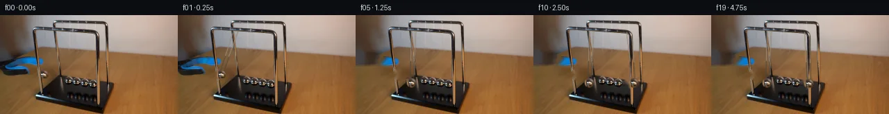

![首帧]()

Round 00
2026-11-05T08:21:53.275418+00:00像素候选变化代码 +204/−0inspection 更新
pixels 1fb0853c8c894a30 · code 0e4cefb58f347d81
查看本轮 generate.py 真实 diff
--- previous/generate.py
+++ current/generate.py
@@ -0,0 +1,204 @@
+from pathlib import Path
+
+import cv2
+import numpy as np
+from PIL import Image, ImageDraw, ImageFont
+
+import artifact_io
+
+
+ROOT = Path(__file__).resolve().parent
+W, H = 256, 144
+
+
+def feathered_circle(size, radius, feather=1.15):
+ yy, xx = np.mgrid[:size, :size]
+ c = (size - 1) / 2.0
+ distance = np.sqrt((xx - c) ** 2 + (yy - c) ** 2)
+ alpha = np.clip((radius + feather - distance) / feather, 0.0, 1.0)
+ return alpha.astype(np.float32)
+
+
+def blend_rgba(dst, rgb, alpha, left, top, strength=1.0):
+ """Alpha-composite a small RGB patch, safely clipped to the canvas."""
+ ph, pw = rgb.shape[:2]
+ x0, y0 = max(0, left), max(0, top)
+ x1, y1 = min(W, left + pw), min(H, top + ph)
+ if x1 <= x0 or y1 <= y0:
+ return
+ sx0, sy0 = x0 - left, y0 - top
+ sx1, sy1 = sx0 + (x1 - x0), sy0 + (y1 - y0)
+ a = (alpha[sy0:sy1, sx0:sx1] * strength)[..., None]
+ src = rgb[sy0:sy1, sx0:sx1].astype(np.float32)
+ target = dst[y0:y1, x0:x1].astype(np.float32)
+ dst[y0:y1, x0:x1] = np.clip(src * a + target * (1.0 - a), 0, 255).astype(np.uint8)
+
+
+def antialiased_string(frame, anchor, center, offset, opacity=0.62):
+ """Draw one fine, two-tone suspension wire with subpixel-looking AA."""
+ overlay = frame.copy()
+ end = (int(round(center[0] + offset)), int(round(center[1] - 2)))
+ cv2.line(overlay, anchor, end, (73, 68, 59), 1, cv2.LINE_AA)
+ # A short warm highlight makes the line match the photographed chrome wire.
+ mid = (int(round(anchor[0] * 0.40 + end[0] * 0.60)),
+ int(round(anchor[1] * 0.40 + end[1] * 0.60)))
+ cv2.line(overlay, anchor, mid, (167, 154, 132), 1, cv2.LINE_AA)
+ cv2.addWeighted(overlay, opacity, frame, 1.0 - opacity, 0, dst=frame)
+
+
+def paste_ball(frame, ball_rgb, ball_alpha, center, strength=1.0, strings=None):
+ if strings:
+ for anchor, offset in strings:
+ antialiased_string(frame, anchor, center, offset)
+ size = ball_rgb.shape[0]
+ left = int(round(center[0] - (size - 1) / 2))
+ top = int(round(center[1] - (size - 1) / 2))
+ blend_rgba(frame, ball_rgb, ball_alpha, left, top, strength)
+
+
+def shifted_grabber(frame, grab_rgb, grab_alpha, dx, strength=1.0):
+ blend_rgba(frame, grab_rgb, grab_alpha, dx, 56, strength)
+
+
+def make_transition_check(frames):
+ """Create a labeled contact sheet pairing selected frames with delta heatmaps."""
+ chosen = [1, 3, 5, 8, 11, 14, 17, 19]
+ sheet = Image.new("RGB", (4 * W, 4 * (H + 20)), (22, 25, 31))
+ draw = ImageDraw.Draw(sheet)
+ font = ImageFont.load_default()
+ for i, t in enumerate(chosen):
+ col, block_row = i % 4, i // 4
+ x = col * W
+ y = block_row * 2 * (H + 20)
+ sheet.paste(Image.fromarray(frames[t]), (x, y + 20))
+ draw.text((x + 5, y + 4), f"frame {t:02d}", fill=(245, 245, 245), font=font)
+
+ delta = np.max(np.abs(frames[t].astype(np.int16) - frames[t - 1].astype(np.int16)), axis=2)
+ heat = np.zeros((H, W, 3), dtype=np.uint8)
+ heat[..., 0] = np.clip(delta * 3, 0, 255).astype(np.uint8)
+ heat[..., 1] = np.clip(delta * 1.2, 0, 170).astype(np.uint8)
+ heat[..., 2] = np.where(delta > 4, 24, 0).astype(np.uint8)
+ dy = y + H + 20
+ sheet.paste(Image.fromarray(heat), (x, dy + 20))
+ changed = int(np.count_nonzero(delta))
+ draw.text((x + 5, dy + 4), f"delta {t-1:02d}->{t:02d}: {changed} px", fill=(245, 245, 245), font=font)
+ sheet.save(ROOT / "transition_check.png")
+
+
… diff truncated; 117 more lines …